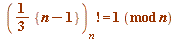
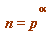
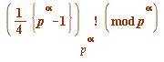
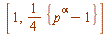
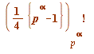
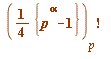
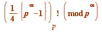

Cutting corners: introducing the gamma-values 
Now, I am really going to cut corners. With the final part of the last section in mind, that we embarked on a study of solutions of Gauss factorial congruences like (e.g.):

etc
and one clear message quickly presented itself, that an especially significant case was when 
But when one tries finding solutions of (e.g) at one quickly senses that as soon as  goes up in value to 2 (then 3, then 4, then 5, ... ) (and now I am resorting to crudely inaccurate speech, to give you a sense; I shall make it more precise shortly) the value of:
goes up in value to 2 (then 3, then 4, then 5, ... ) (and now I am resorting to crudely inaccurate speech, to give you a sense; I shall make it more precise shortly) the value of:

gets further and further away from being 1 as increases in size.
What exactly do I mean by that broad statement?
First, let me introduce a simplification of the notation in the last Gauss factorial object:
The very meaning of that object is that it is the product of all the residues in the quarter interval  that are relatively prime to  , i.e. do not have a prime factor in common with . But - since the only prime dividing
, i.e. do not have a prime factor in common with . But - since the only prime dividing  is
is  itself, then
itself, then
 may be more be more succinctly written - without altering its meaning - as 
Now, we give a precise meaning to " further and further away from being 1 as  increases in size ".
increases in size ".
Let  be the order with respect to the modulus of the Gauss factorial , then the precise meaning of:
be the order with respect to the modulus of the Gauss factorial , then the precise meaning of:
 gets further away from 1 as increases in size
is that the gamma-values (generally)  increase in size with
increase in size with  .
.
Moreover, this increase is highly regular (99.999 ... % of the time) - and not just for Gauss quarter-factorials, but generally - as illustrated in the next section, with half- and quarter factorials.